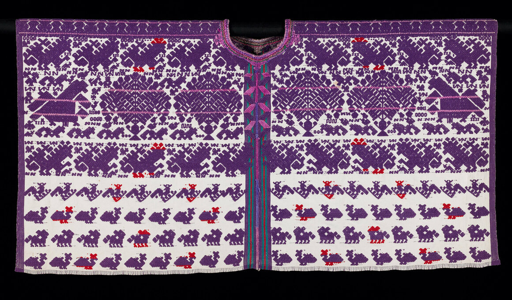

Originally worn by indigenous women in the MesoAmerican region, the Huipil is a silhouette that dates to before European colonization of the Americas.

The huipil was worn by classes high and low, both for casual settings and for ceremonial occasions depending on the textiles and trims used.
Painting of Toltec woman in huipil by Charles Skinner, 19th century
With the colonization of the Americans, European trading routes and new technologies such as the sewing machine introduced new variations to the huipil. The Tehuana port, which was a stopping point between Spanish traders/colonizers bringing goods from the Philippines to Europe, for example,
saw the introduction of Phillipino style embroidery onto the traditional huipil.
Tehuana Huipil with Phillipino-style embroidery
The sewing machine, which allowed for easy and quick chain-stitching popularized this style as the production modes shifted from hand-made garments to mass produced ones.
Quetzalli men's huipil by Carla Fernandez
Fabrication
The huipil is a tunic that consists of three panels of cloth sewn together, forming openings for the arms and a rectangular opening for the head. They usually come in very intricate weaves and are ornamented with embroidery, ribbons, lace, and more. During the Victorian era, transparent huipiles and form-fitting wrap skirts were completely replaced by muslin huipiles and skirts with petticoats.